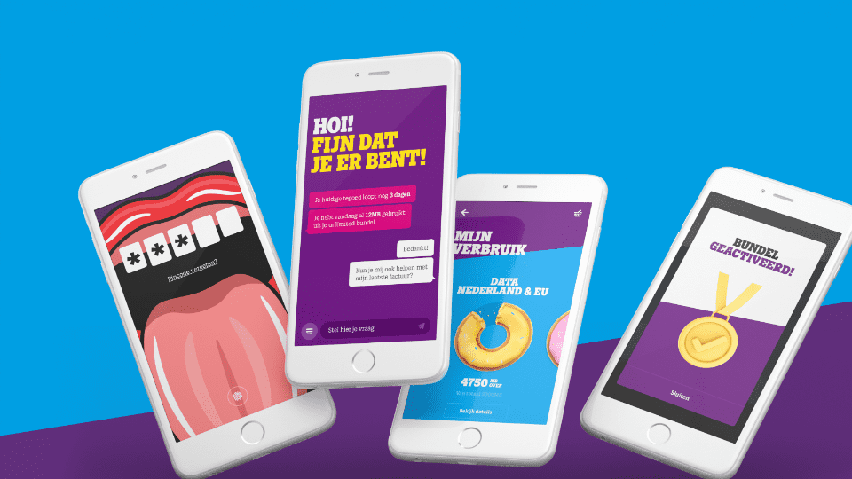

Hoe wij Tele2 aan de scrum kregen én een innovatieve app met chatbot ontwikkelden voor alle vragen van Tele2 gebruikers
Tele2 doet er alles aan haar abonnees de allerbeste klantervaring te geven. Daar hoort ook een geweldig werkende MijnTele2-app bij. Met hulp van 800 klanten (en een enthousiast FrontMen-team) werd de bestaande app radicaal vernieuwd. Daarbij sloegen we twee uitdagende vliegen in één klap.

Hoe wij Tele2 aan de scrum kregen én een innovatieve app met chatbot ontwikkelden voor alle vragen van Tele2 gebruikers
Tele2 doet er alles aan haar abonnees de allerbeste klantervaring te geven. Daar hoort ook een geweldig werkende MijnTele2-app bij. Met hulp van 800 klanten (en een enthousiast FrontMen-team) werd de bestaande app radicaal vernieuwd. Daarbij sloegen we twee uitdagende vliegen in één klap.
Dit was de uitdaging
Een hybride applicatie moest de twee bestaande native apps (iOS en Android) vervangen, op alle devices even goed performen en eenvoudig te onderhouden zijn. Ook moest er een compleet nieuwe branding - met als extra complicerende factor een veelheid aan animaties - worden doorgevoerd.
De tweede opdracht was een special feature te ontwikkelen waardoor de app meer biedt dan de gebruikelijke functies. Tele2 wilde van de MijnTele2-app een slimme zelfservice-app maken die letterlijk naar klanten luistert en hen heel gericht helpt met vragen rond hun mobiele abonnement.

Dat pakten we zó aan
Om te beginnen hebben we in oktober 2017 het werken volgens de scrum-aanpak in een agile omgeving geïntroduceerd. We stelden een ontwikkelteam samen waarin vier developers, een test automation expert en een business analist (scrum master) samenwerkten. In korte sprints ontwikkelde het team steeds werkende componenten voor de app, die vervolgens werden getest door de eindgebruikers. Hun eerste aanraking met agile beviel Tele2 zo goed, dat deze manier van werken inmiddels voor alle ontwikkelteams wordt doorgevoerd.
Dit hebben we gemaakt
Het ontwikkelteam leverde een app op in de nieuwe branding, met naast de gebruikelijke navigatie een vernieuwende core feature: een zelflerende chatbot op basis van IBM Watson Assistant. De app heeft niet langer een aparte iOS- en Android-code, wat het onderhoud aanzienlijk vereenvoudigd. Ook vonden we een oplossing voor de (met name op Android) technisch zeer lastige uitdaging animaties te laten draaien met behoud van performance.
Klanten komen bij het starten van de app meteen terecht bij de prettig ogende chatfunctie. Dankzij de ingebouwde machine learning-functie, wordt de app slimmer naarmate gebruikers meer vragen stellen.
Deze technieken gebruikten we
De applicatie is gebouwd in React native. Voor in-app communicatie wordt gebruik gemaakt van Redux en om side effects te managen zetten we Redux-sagas in.
Unit tests worden continu automatisch gedaan met behulp van Jest en Enzyme.
Met een feedback-loop worden nieuwe functionaliteiten en bugfixes doorgevoerd. Alle gebruikers hebben de mogelijkheid een foutrapport inclusief screenshot of schermopname rechtstreeks naar de developers te versturen.
Het resultaat
De app wordt inmiddels (na twee interne releases en één beta release) door meer dan 200.000 mensen gebruikt en krijgt goede feedback. Het blijkt dat gebruikers het leuk vinden om te helpen de app steeds slimmer te maken.